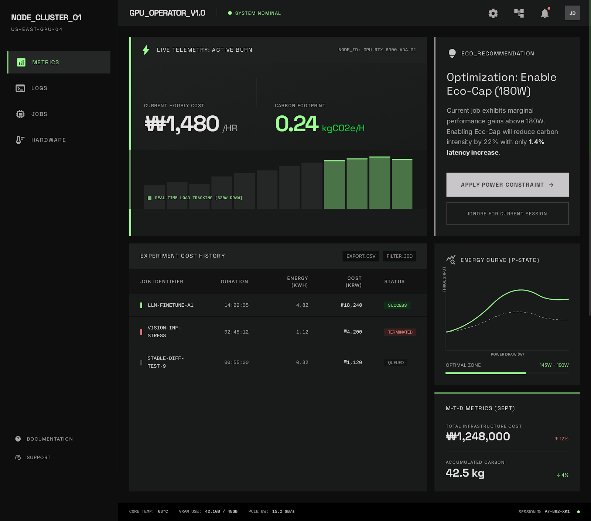

PF SAFE DEMO · 2026-03-17-p003
GPU Job Cost & Carbon Meter
Estimate compute cost and carbon footprint together so operators can spot the most wasteful AI runs fast.
ingest status
Imported from Stitch exportStitch output is preserved locally while the live PF demo serves a dependency-light safe wrapper with the approved screen.
- Source preserved as local artifact
- Public demo path avoids remote CDN dependency
- Preview uses the shipped Stitch screen
